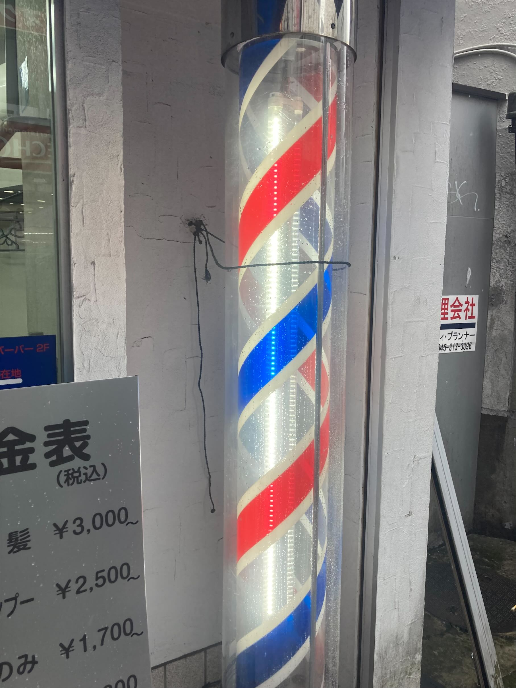
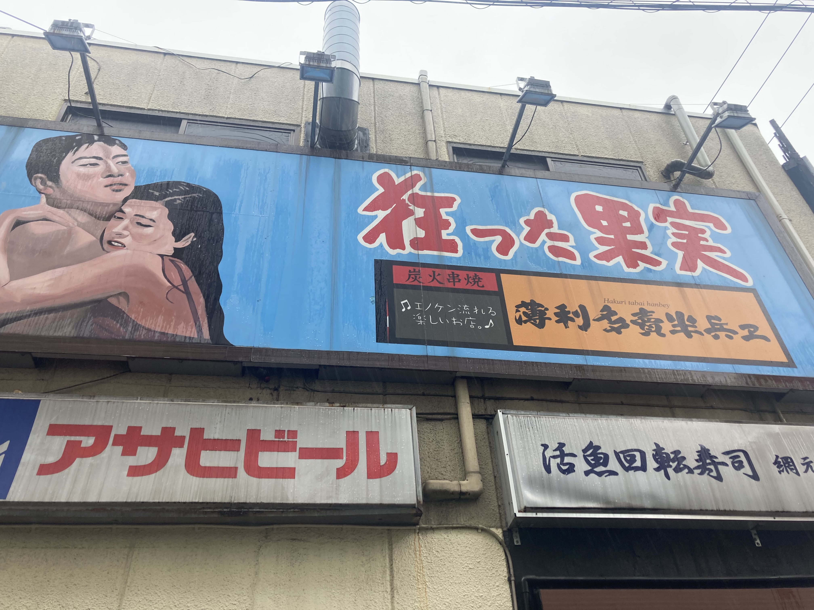
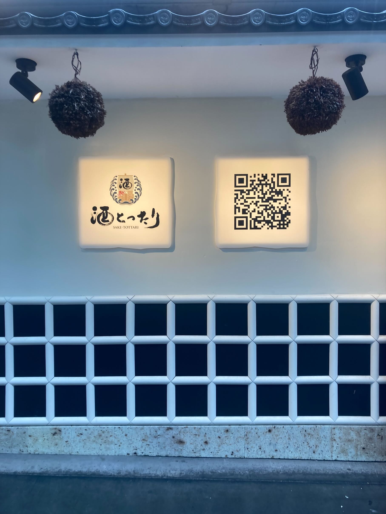

課題2
【観察課題】
１．よくある床屋の目印
まず一つ目の写真です。
この写真は、横浜駅西口を出て少し歩いたところにある散髪屋さんで撮影したものです。
学校帰りに見かけました。普通にどこにでもあるような、ザ・散髪屋という感じのオブジェ。
ただ、地元の散髪屋に置いてあるオブジェとは赤白部分の柄が少し違い、観察しがいのあるものだと思い、撮影しました。

２．インパクト強めの絵とワード
次の写真も、横浜駅西口を出て少し歩いたところにある、薄利多売半兵ヱという居酒屋さんです。
「狂った果実」というワードと、男女が抱き合っている絵がとても印象的だったため、撮影しました。
この写真は、XBPのレノ君と一緒にいたときに撮影したものです。面白い看板があったので2人で盛り上ってました（笑）。

３．斬新な戦法
最後の写真も横浜駅西口を出てすぐ近くの居酒屋です。酒とったりというお店です。
お店の壁にQRコードという、斬新でパンチの効いた外装がとても印象的だったため、撮影しました。
インパクトがすごいと思うと同時に、お店の宣伝効果も高いと感じました。
お店に入る前に情報を取得できる利便性はもちろん、看板と同じ大きさのQRコードという斬新さを持ち合わせたお店だと考えました。
